-
PCA
-
PCA的出发点
PCA是起源于统计学的方法，主要目的是减少统计特征之间的相关性。
①样本数据的特征之间存在线性相关性。
X4=X1+3X2-4X3；X4特征便是冗余特征。
②特征维度越高，越耗费资源和时间。处理效率不高，尤其是稀疏矩阵。
③二八定律，20%的特征提供80%的学习效果。
④维度越多，噪音越大，产生较大的学习干扰。
-
PCA的问题描述
求解一个合适的线性无关正交组合
F(F1，F2，…,Fk)
代表原来的线性组合
X(X1，X2，…，Xn)，
其中k<=n。
即：求解一个Q(n×k)将X变换为F。
F(F1,F2,…,Fk)=X(X1,X2,…,Xn)Q(n×k)
-
PCA的原理
-
最大方差理论——主成分表示的信息量应该是最大化的
在信号处理中认为信号具有较大的方差，噪声有较小的方差，信噪比就是信号与噪声的方差比，越大越好。
最好的k维特征是将n维样本点转换为k维后，每一维上的样本方差都很大。
例子：图1，图2
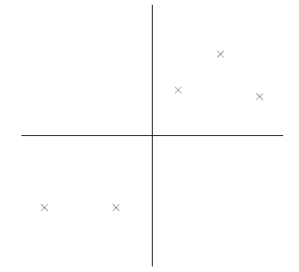
图1
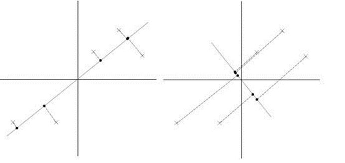
图2
图1显示的是5个样本点，已经做过预处理，均值为0，特征方差归一。图2将它们分别投影到了两个维度。左图投影后样本点的方差较大，因此保留的信息较为充分。
假设我们要投影的特征的方向向量为u，且是一个单位向量。并且这些实例经过中心化处理，每一维特征均值都为0。因此投影到u上的样本点（只有一个到原点的距离值）的均值仍然是0。
因此投影后的方差可以表示为
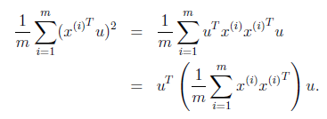

{kind=link}
{kind=link}
{kind=link}
{kind=link}
{kind=link}
{kind=link}
即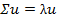
{kind=link}
也就是说，就是的特征值，u是特征向量。最佳的投影直线是特征值最大时对应的特征向量。
{kind=link}
{kind=link}
{kind=link}
因此，我们只需要对协方差矩阵进行特征值分解，得到的前k大特征值对应的特征向量就是最佳的k维新特征，而且这k维新特征是正交的。得到前k个u以后，实例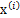通过以下变换可以得到新的样本。
{kind=link}
{kind=link}
{kind=link}
{kind=link}
通过选取最大的k个u，使得方差较小的特征（如噪声）被丢弃。
-
PCA算法过程
将所获得的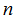个指标(每一指标有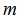个样品）的一批数据写成一个(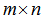)维数据矩阵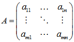．
1、对矩阵A作标准化处理：即对每一个指标分量进行标准化处理。
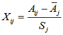或者
其中样本均值： 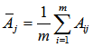
样本标准差： 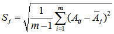
从而得到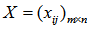。
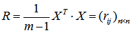
3、计算R的特征值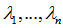，即对应的特征向量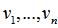。
4、特征值按降序排序(通过选择排序)得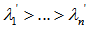并对特征向量进行相应调整得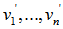。
5、通过施密特正交化方法单位正交化特征向量，得到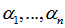。
6、计算特征值的累积贡献率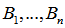，根据给定的提取效率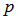和限定的特征数量K,如果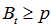||t=K,则提取个主成分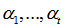。
7、计算已标准化的样本数据X在提取出的特征向量上的投影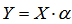，其中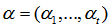。
-
PCA实例分析
假设我们得到的2维数据如下：
{kind=link}
行代表了实例，列代表特征，这里有10个实例，每个实例两个特征。
第1步分别求x和y的平均值，然后对于所有的实例，都减去对应的均值。这里x的均值是1.81，y的均值是1.91，那么一个实例减去均值后即为（0.69,0.49），得到
{kind=link}
第2步，求特征协方差矩阵，如果数据是3维，那么协方差矩阵是
{kind=link}
这里只有x和y，求解得
{kind=link}
对角线上分别是x和y的方差，非对角线上是协方差。协方差大于0表示x和y若有一个增，另一个也增；小于0表示一个增，一个减；协方差为0时，两者独立。协方差绝对值越大，两者对彼此的影响越大，反之越小。
第3步，求协方差的特征值和特征向量，得到
{kind=link}
上面是两个特征值，下面是对应的特征向量，特征值0.0490833989对应特征向量为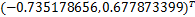，这里的特征向量都归一化为单位向量。
{kind=link}
第4步，将特征值按照从大到小的顺序排序，选择其中最大的k个，然后将其对应的k个特征向量分别作为列向量组成特征向量矩阵。
这里特征值只有两个，我们选择其中最大的那个，这里是1.28402771，对应的特征向量是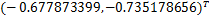。
{kind=link}
第5步，将样本点投影到选取的特征向量上。假设实例数为m，特征数为n，减去均值后的样本矩阵为DataAdjust(m*n)，协方差矩阵是n*n，选取的k个特征向量组成的矩阵为EigenVectors(n*k)。那么投影后的数据FinalData为
{kind=link}
这里是
FinalData(10*1) = DataAdjust(10*2矩阵)×特征向量
{kind=link}
得到结果是
{kind=link}
这样，就将原始实例的n维特征变成了k维，这k维就是原始特征在k维上的投影。
-
代码解读
Weka包说明
开源的数据挖掘工具包，有可视化操作界面，也提供JAVA的jar和C#的动态链接库。
主要功能包括分类、聚类、关联规则、属性选择、训练集选择等核心功能。
同时提供了多种的数据装载、筛选、清洗、转换工具；
提供了强大的可视化组件。
提供了知识挖掘的工作流可视化开发环境。
PrincipalComponentAnalysis类说明
有两个版本的类型实现。继承Filters类的是最新版的。在原版基础上修改而来。
具体方法说明——根据PCA过程，一个一个指定具体的行或者函数。
输入实例instances()：
输出结果：
可以设置的参数：
PCA过程描述：
-
标准化：
-
求协方差矩阵C：
-
求特征值和特征向量：
-
排序并筛选：
-
正交化，转换为单位向量：
-
实例转换并输出
使用说明
-
FileReader reader=new FileReader(fileString);
Instances instances=new Instances(reader);
PrincipalComponents pca=new PrincipalComponents();
pca.setInputFormat(instances);
pca.setMaximumAttributes(5);
Instances instances2=Filter.useFilter(instances, pca);
System.out.println(“PCA前数据样本：“);
for(int i=0;i<5;i++) System.out.println(instances.instance(i));
System.out.println(“PCA 后数据样本：“);
for(int i=0;i<5;i++) System.out.println(instances2.instance(i));
特点，基于数据的统计规律，没有太多的参数。处理过程比较固定。